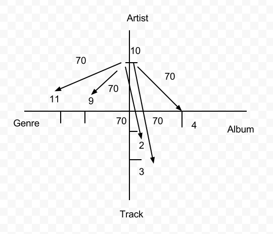

Data Mining Portfolio
Application: 2011 KDD Cup Challenge, Track 1
Pandora and lastfm have ruled the market as radio stations that tend to play songs that a user may like to hear even though they may have never heard the song before. This is not magic, but these systems are based on user data. The user at the beginning of starting a radio station will be asked to rate songs in a manner if they liked the song or did not like the song and from there the stations will begin to learn the style of music that the individual enjoys listening to. The KDD Cup challenge is asking the same principle of user rating to predict future music that an individual may like.
Preprocessing
When first opening up the tract 1 file from the KDD Cup website, I instantly became overwhelmed with the amount data there was and how confusing the structure seemed to be. Everything was a unique number and most files had 6 or more unique numbers per line. Fortunately, the meta data provided on the KDD Cup website explained the format of the data files to get a grasp on what was being shown. In the artist file in was just the list of artist unique ids, the genres file was also just a list of unique ids to the genres, the track file included all the unique ids for the track as well as the album id, artist id, and possibly the genre ids, and the album file include a unique id to the album, the artist id, and the genre ids. This small explanation of the data was the most helpful information in the entire meta data.
After getting my thoughts centered on the ideal that every number is a unique number, my next step was to look for something that could condense the data for me so I can see all attributes in relation to each other at one time. Before thinking, I jumped into programming a ruby file that would set up structures of each artist, tacks, albums, and genres with each holding an instance of the other structures. What seemed to be a brilliant idea to structure the data, I did not take into consideration the size of each data file which affects the time to process as it would have to parse through each file and not to mention the amount of memory it was eating up because essentially each structure held 3 instances of 4000 records. This may have worked on a smaller set of data such as the Iris data, but on a large set of date such as this one I had to come up with another way to look at the information. I moved away from the idea of structures to a database.
While setting up the database in MySQL, I found myself in a debate of do I really need to develop a data base to do some data mining, or could I simply read what I need into a file and just read from that file. I liked the idea better because it was a lot less programming for something that was not essential to the data mining process. So, I quickly abandoned the database before getting too far into the construction to start my file generation. However, turning to the file generation seemed nice at first, but I realized I would still be parsing through so many thousands of lines of data just to create another file of thousands of lines of data. This is when I returned to the meta data to read up on all of structures of the data. After reading through the meta data, I noticed that the track file contained the artist id, album id, and genre ids which sparked an idea that if this one data file contained all four measure of information that I would need I could easily make a file that would hold the artist id with a following list of albums, tracks, and genres. his file would make it easy to use for comparisons to the test data as well as if I needed to build a data base or structure then this file would be essential in making the process a lot less easier.
Processing
The file provided me with the essential information that I would need in implementing some of the classification algorithms to help predict the out put of the test data. The main task here was to decide on which classification algorithm to use in oder to help generate a high resulting test performance. I first went back to review how each algorithm executed as well as how they were implemented. I began to lean towards a artificial neural network because I thought that each training individual would have their own ANN, which should produce optimal results for the test performance. However, considering the reason that the data was placed in the KDD Cup I began to shift away from any conventional methods.The KDD Cup data was intended to spark thought and new insight into data mining to hopefully develop new ways of data exploration. With that thought In mind, I decided to take what I know of the conventional methods and try to develop my own method to test the data upon.
Looking at the structure of an ANN, I noticed at how the main principle in this method is the connection of nodes to nodes with a determined weight. I began to develop my own concept of connections, but these connections would be tied in with the data. My concept of an algorithm to help determine the prediction made upon future music ratings was to link the data within its own self with weights on the connections that were only altered by the values being passed through similar to the ANN. The initial frame work of the algorithm was to treat each attribute as its own axis with the range of the axis being all the values of the attribute. From here, a mapping system could be developed every time a test instance was pushed through the algorithm. Take for example lets say person 1 gave artist 10 a rating of 70, the algorithm would look up in the file that contained all the information based on the artist to draw all the connections from that artist. So, lets say artist 10 has an album 4 with tracks 2 and 3 and genres 9 and 11. The algorithm would set the weights to each of these items to 70 as for that is the only information obtained from the user. Now lets say the same user rates the album 4 as a 90. The algorithm would go through the same connections as before but instead of updating the new weight to 90, the algorithm would take an average of these values and create a new weight of 80 on all the related attributes.

This updating system would ensure that when a concept of any of the attributes was updated then the other attributes would be affected as well. This theory of my application of building a classifier of the track data seemed to work well on paper and in thought, however implementing this was not an easy task to handle. Each attribute had to have an extra subfield in order to store their current rating based on the training data as well as maintaining an array of training instances for each person because each individual would be unique in their own judgment. This is where I currently stand with at the project. My first results were excellent when just running the training set and few of my own test data instances, but the algorithm performed horribly against the actual test data.
Evaluating the issue
Coming to this point of where my algorithm has failed to provide any valuable results has not altered my view on working on my own classifier as to switching to Knime or Weka. My new focus is determining how to improve the algorithm. Just by spending time on checking whether all data fields were being updated correctly I never considered the idea that the genres should be reconsidered in the calculation of weights . For example an artist may have many genres they sing but because one genre received a bad rating from the user it does not mean that the artist rating should suffer equally as the genre and vic versa. The concept now that is currently being worked on is the idea the number of genres represented by the artist should actually all share on equal part in affecting the artist rating. For example if an artist sings 4 genres then each genre would hold ¼ of the weight assigned to the genre. Also after implementing this by using a file, a database may have been more useful as I would not have to be continuously searching for the unique ids.
To come to terms with the fact that I did not discover anything in the data was more difficult than the actual algorithm implementation. I feel that this barrier of not getting any results would help me to realize earlier on what thing will work, what things may need more time to be thought out, and when to just use the available data mining tools out there. Part of the discovery of data is what you don't discover and that is where I stand with the project at the moment.